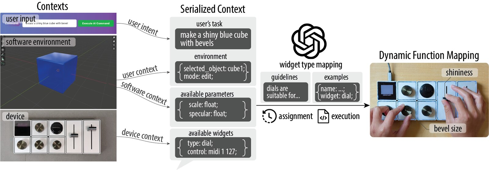
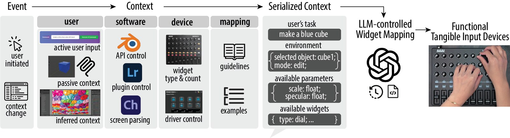
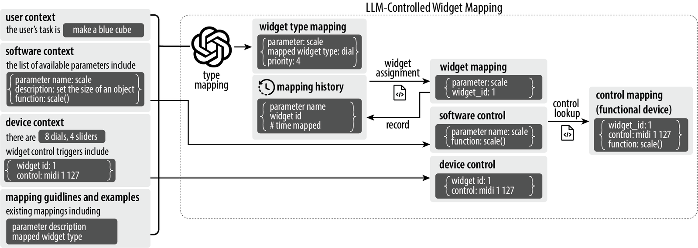
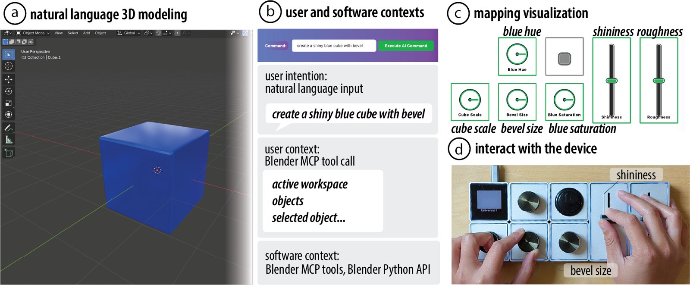
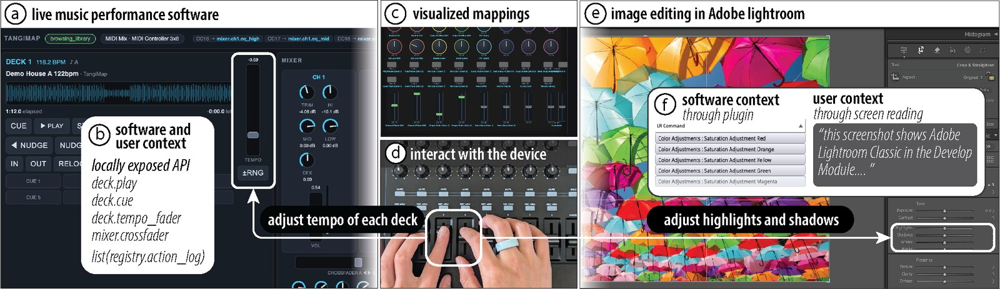
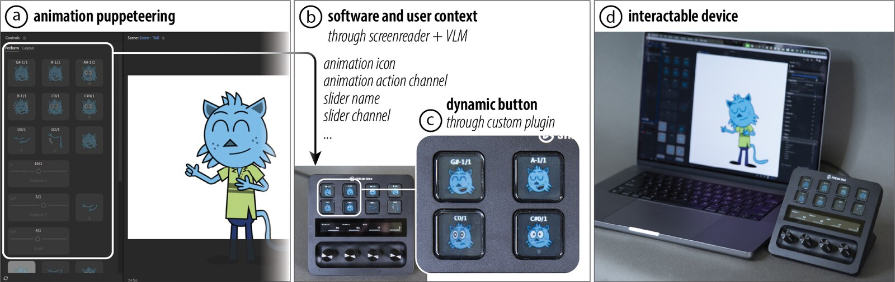

TangiMap: Context-Aware Generative Function Mapping for Tangible Input Devices

Figure 1: TangiMap bridges tangible input devices with dynamic software contexts by generating adaptive function mappings for hardware widgets. The system includes context from multiple sources: user intent, user environment, software parameters, and device configuration. These contexts are serialized into a structured representation and processed by an LLM together with mapping guidelines and examples to generate dynamic mappings. Functions are then assigned and executed on available tangible widgets, enabling real-time, context-aware interaction.
While tangible input devices with physical controls such as knobs and sliders enable efficient interaction, they often lack the flexibility to adapt to dynamic contexts, limiting their use to predefined applications with fixed functionalities. In this paper, we introduce TangiMap, a proof-of-concept system that bridges tangible input devices with dynamic software contexts by generating adaptive function mappings for hardware controls.
To achieve this, TangiMap analyzes the user’s declared hardware specifications, the available controls, and the target software context, and uses large language models (LLMs) to assign suitable functions to each control element. To support diverse contexts, TangiMap presents multiple strategies such as API queries and screen parsing.
We demonstrate the system through four scenarios: interactive adjustment of natural language parameters in 3D modeling, live music performance, task-aware mapping of on-screen controls in image editing, and dynamic puppeteering in animation.
INTRODUCTION
From early hand tools to today’s complex mechanical panels, people have built devices that respond to the hand with tangible feedback, enabling efficient and precise work. In the digital era, this tangible interaction remains indispensable: a keyboard enables eyes-free, rapid text entry; an editing console supports intuitive, simultaneous parameter changes for digital design; and a game controller affords quick, embodied reactions in fast-paced play. Extensive research on tangible interfaces has demonstrated that physical controls such as dials, knobs, sliders, and buttons enable efficient, precise, and often simultaneous manipulation of parameters, leading to measurable performance benefits and higher user preference compared to purely graphical user interfaces.
Despite these advantages, tangible interfaces face a fundamental limitation: their functionality is fixed to the hardware form and must be explicitly mapped to software functions. A slider may adjust brightness in a photo editor or volume in a music mixer, but such mappings are typically predefined or manually assigned by the user. This rigidity is acceptable in stable contexts such as gaming, where mappings rarely change, but in complex software environments with multiple modes and evolving workflows, reusing the same physical controls across contexts demands constant remapping. This manual overhead is tedious, and it is also impractical to rely on universal presets across all scenarios, since users often own different types and configurations of tangible devices.
Moreover, recent advances in large language models have renewed interest in natural language interfaces (NLIs), which allow users to specify tasks in free-form language. Such interfaces support fluid expression of intent but struggle to provide precise, fine-grained, and interactive parameter control. This gap has motivated the emergence of ephemeral UIs, which are lightweight, temporary controls that appear on demand. Yet such fast-changing, dynamic scenarios are particularly challenging for tangible input, whose physical rigidity resists the flexibility required by these new interaction paradigms.
These observations raise a central research question: can we make tangible interfaces as dynamic and adaptive as software widgets, automatically assigning appropriate functions to physical controls based on the user’s current context? To address this, we present TangiMap, a proof-of-concept system that bridges tangible input devices with dynamic software contexts by generating adaptive function mappings for hardware widgets, the individual physical input controls on a tangible device, such as knobs, sliders, and buttons.
In summary, we contribute:
- an end-to-end pipeline for dynamically mapping software functionalities onto tangible input devices;
- a method for serializing diverse software and device environments into natural language contexts; and
- four application scenarios that demonstrate the potential of TangiMap across different uses, software support, and device types.
SYSTEM STRUCTURE
TangiMap dynamically maps software functionalities to tangible input widgets in a context-aware manner. The pipeline begins with an event, either initiated by the user or triggered by a change in context. To generate task-appropriate mappings, TangiMap integrates context from three sources: (i) the user, including explicit input, supporting context, or inferred intent; (ii) the software, including functions and tunable parameters obtained through APIs, plugins, or screen parsing; and (iii) the device, including widget types, counts, and control.

Figure 2: The TangiMap pipeline. The system begins with an event and gathers context from the user, software, and device, using methods suited to the specific environment. This context is serialized into a representation of the task, environment, parameters, and available widgets. An LLM-controlled mapping agent then selects relevant parameters, assigns them to widget types, and binds them to specific controls on the device.
The collected context is serialized into a structured description of the current task, relevant parameters, and available widgets. An LLM-controlled mapping agent consumes this description, together with mapping guidelines and examples, to generate a widget-function mapping that respects four design considerations:
- User Context (D1): software typically encompasses more functionality than hardware can support, so TangiMap identifies which functions are relevant to the user’s current task and intent.
- Software and Device Context (D2): TangiMap needs to know what parameters the software exposes, how to control them, and how to detect widget interactions on the connected device.
- Widget Compatibility (D3): different widget types suit different parameter types, so TangiMap matches each function to the most appropriate control (button, knob, slider, etc.).
- Mapping Consistency (D4): generic input devices require users to relearn mappings each time they change, so TangiMap preserves consistency over time to reduce this cognitive overhead.
Because TangiMap operates across different applications and hardware, we separate application-agnostic components (mapping guidelines, context processing, and mapping policy) from application-specific components (user context collection, and software and device context collection).
User Context (D1)
User context extraction is inherently application-specific, as it depends on how much information the application exposes and the level of intention the user reveals. TangiMap employs three complementary ways of extracting and serializing user context:
- Active user intent input: when the user explicitly states their task, for example in a natural language interface, the stated task is incorporated directly so the system can prioritize the most relevant functions.
- Passive user context: some applications provide APIs or tool calls that expose the currently selected object, the active window, and a history of recent events, which are serialized into descriptive inputs.
- Inferred user context: when applications expose no APIs, TangiMap uses a vision-language model (VLM) to parse the current application state, including the active window, the cursor-focused element, and on-screen widgets such as sliders and buttons together with their labels.
Software and Device Context (D2)
Software context consists of the available parameters and their corresponding control functions. Inspired by Model Context Protocol (MCP) tool calls, it is expressed as a JSON file that lists parameters together with their descriptions, types, ranges, and control functions. When an application provides a formal API, TangiMap queries internal functions and parameters directly. If only plugins or extensions are available, TangiMap uses them to capture the subset of parameters they expose. In the absence of both, the system falls back on screen parsing to identify control opportunities such as hotkeys.
Device context consists of the type and count of available widgets, and the control pathways that connect these widgets to software functions. Widget types and counts can be specified manually or extracted automatically by capturing an image of the device and processing it with a VLM. To ensure consistency across devices, TangiMap represents all controls using the MIDI protocol. For native MIDI devices, the MIDI input is used directly, and for non-MIDI devices, we use or write a plugin that generates MIDI output on a virtual channel.
Widget Compatibility (D3)
To guide the system in generating appropriate mappings, TangiMap incorporates application-agnostic guidelines and concrete examples. The guidelines capture heuristics about which widget types are best suited for different parameter categories: continuous parameters without defined bounds are better suited to dials, parameters with limited ranges such as brightness are better suited to sliders, and discrete actions such as toggles or mode switches are more appropriate for buttons. The guidelines were generated with an LLM and then reviewed and refined by the authors for consistency with established interaction design practices.
Mapping and Execution (D3, D4)
The LLM-controlled widget mapping system integrates the encoded contexts to generate mappings between software functions and tangible widgets, then binds those functions to specific device controls, transforming the device into a functional controller for the target application.

Figure 3: The LLM-controlled widget mapping process. User, software, and device contexts are combined with mapping guidelines and examples to generate a list of relevant parameters and their corresponding widget types. The system then includes mapping history to assign parameters to specific widgets. Finally, it performs a control lookup to bind software functions to device controls, producing the final executable control mapping.
Widget Type Mapping: TangiMap uses a single structured prompt with a role directive followed by four context sections: user context, software context, device context, and design guidelines. The system performs single-pass inference with an LLM (Gemini 2.5 Flash) to select the parameters relevant to the user’s current task and map them to widget types. The output is structured JSON where each entry specifies a software function, its assigned widget type, and a priority score (1-10). Per-type widget counts are stated in the prompt so the LLM does not exceed device capacity.
Conflict Resolution: in rare cases where more functions of a type are proposed than the device has widgets of that type, candidates are sorted by priority and only the top-ranked ones are retained.
Widget Assignment: each remaining function is assigned to a specific widget, consulting the user’s mapping history first so that a function mapped before reuses the same widget (D4). In cases of overlap, the more frequently mapped function keeps the widget, and the other falls back to the next unassigned widget of its type.
Control Lookup: finally, the system looks up the software function for each parameter and the MIDI channel and control change (CC) number for each widget, resolved via a per-device profile recorded once at setup. It then listens on that channel and executes the mapped function whenever the widget is used, closing the loop between tangible input and software control.
TECHNICAL EVALUATION
We evaluated whether TangiMap’s widget-type assignments align with human-authored reference configurations. We collected 16 reference configurations from real-world device profiles and publicly available preset libraries, spanning 8 fixed-layout and 8 configurable-layout devices and 305 controls in total. The set covers knobs, dials, faders, buttons, pads, encoders, switches, jog wheels, and trackballs, across color grading panels, MIDI and DJ controllers, modular editing consoles, and game controllers, targeting software from Ableton Live and Rekordbox to Lightroom, Photoshop, and Spotify.
For each configuration, we provided TangiMap with the device’s control inventory and the software context, and measured the reference alignment rate: the proportion of function-widget pairs in which the predicted widget type matches the human-authored reference. Across all 16 configurations, TangiMap achieved an aggregate alignment rate of 99.1%, with 15 of the 16 configurations reaching 100%. The only misalignment came from the TourBox with Clip Studio Paint, where TangiMap mapped “switch between previous and current colors” to a button and “clear selection” to a knob, while the reference did the opposite.
APPLICATIONS
We demonstrate how TangiMap supports creative workflows through four scenarios. Each scenario exercises a distinct interaction mode and varies in both the software and device context.
Interactive Adjustment of NLI-Generated Parameters
One way to help users express goals more precisely in natural language interfaces is to present ephemeral, custom-generated UIs for adjusting the parameters of a command. Because these interfaces are created on the fly, no existing system can map them to tangible input devices. TangiMap addresses this gap, which we demonstrate with natural language 3D modeling in Blender.
The user enters a command such as “create a shiny blue cube with bevel.” The user context includes the prompt, the Blender commands it generates, and the current scene state. TangiMap identifies relevant parameters from the tools exposed through Blender’s MCP plugin and the Blender Python API, and assigns them to the widgets of a Monogram Creative Console in MIDI mode. The mapping is shown through a visualization of the device layout with generated labels; for example, a knob adjusts “bevel size” and a slider controls “shininess.”

Figure 4: TangiMap enables interactive adjustment of parameters generated from natural language input. (a) The user performs 3D modeling in Blender using natural language input, “create a shiny blue cube with bevel”. (b) TangiMap collects user and software contexts through the user’s input and the Blender API. (c) Relevant parameters are selected and mapped onto the tangible device. (d) The user adjusts these parameters, such as “bevel size” and “shininess”, by turning knobs and moving sliders.
Live Performance in Computer Music
Performers depend on physical controls for eyes-free, real-time manipulation, but dedicated hardware such as professional DJ systems is expensive and tied to a fixed layout and application. We demonstrate this scenario on a custom computer music application written with an AI coding agent, driven by an affordable, general-purpose Akai MIDIMix. The application has two playback decks, a two-channel mixer with three-band EQs and filters, beat-synchronized effects, a sampler, and a track library, exposing over 100 controllable functions through a control registry. By reading that registry directly, TangiMap produces the application’s first hardware mapping.
User context is collected as the log of recent control actions, from which TangiMap infers the performer’s current workflow phase, such as browsing the library, preparing the set, or executing a mix transition. The inferred phase filters the registry down to its most relevant functions, while both decks’ tempo faders are kept in every phase so beatmatching is always available. Remapping requires a manual button press, so the mapping never changes unprompted mid-performance and the performer stays in control of when the hardware reconfigures.
Repurposing the Same Mixer for Color Grading
Color grading places the same demands on tangible control as audio mixing: continuous parameters, adjusted simultaneously, with the eyes on the image rather than on the controls. Dedicated consoles such as the Loupedeck+ or the DaVinci Resolve Color Panel serve this need but are typically single-purpose with fixed mappings. TangiMap instead repurposes the same MIDIMix for Adobe Lightroom, for which no preset exists.
TangiMap parses the Lightroom interface with a VLM (Gemini 2.5 Flash) to identify the active window, panel, and visible controls, such as hue, saturation, and luminance for eight color channels. Lightroom functions are accessed via the MIDI2LR plugin, with a custom MIDI remapper redirecting the mixer’s inputs to the channels of the active parameters. As the user scrolls or switches tools, the mappings adapt; for example, when the crop window is active, the knobs are remapped to parameters such as rotation angle.

Figure 5: TangiMap maps the same generic mixer (Akai MIDIMix) onto two different applications. (a) The performer works in a custom-written computer music performance application. (b) TangiMap reads software and user context directly from the application’s locally exposed API and control-action log. (c) The generated mapping is visualized on the device layout. (d) The performer adjusts the tempo of each deck on the mixer. (e) The same mixer then serves color grading in Adobe Lightroom, where the user adjusts highlights and shadows. (f) The Lightroom software context is captured through the MIDI2LR plugin and user context through screen parsing.
Puppeteering for Animation
Puppeteering refers to the live control of characters or objects, supporting both real-time performance and the rapid creation of animated sequences. It typically requires external input devices with one-to-one mappings between controls and actions, which often take manual configuration to set up. TangiMap streamlines this by automatically mapping available animation triggers onto a tangible device in a single step, demonstrated with Adobe Character Animator and the Elgato Stream Deck+.
Because Character Animator does not provide an SDK, TangiMap captures both user and software context through screen parsing with a VLM, extracting text labels and action icons for the triggers available to the active character. A custom Stream Deck plugin updates each button’s icon to show its trigger image and remaps its MIDI output to match, so the user can act out character actions and expressions in real time.

Figure 6: TangiMap enables automatically setting up a puppeteering system for animation in Adobe Character Animator. (a) The Adobe Character Animator interface with triggers and parameter sliders. (b) User and software contexts are captured through screen parsing with a VLM, extracting text and icons from the interface. (c) The triggers are mapped onto the Elgato Stream Deck+, with a custom TangiMap plugin updating button icons to display the corresponding trigger images. (d) The user can interact with the device to act out the animation in real time.
DISCUSSION, LIMITATIONS, AND FUTURE WORK
Dynamic vs. Fixed Mappings: on-the-fly remapping can undercut the eyes-free, embodied benefits of tangible controls by requiring users to relearn the interface. We see dynamic mapping as suited to software with large or uniquely generated parameter spaces, where no fixed preset can anticipate which functions will be relevant, as in our 3D modeling example. Fixed mappings remain preferable for workflows that depend on muscle memory, such as instrument-style playing in live music. The two are not mutually exclusive, and in future work we plan to let users pin individual controls while others remap, or freeze a generated mapping as a fixed preset.
Spatial Layout: TangiMap focuses on widget type mapping, and addresses spatial layout only through mapping consistency. We plan to incorporate broader layout considerations, such as grouping widgets into logical clusters and distributing them ergonomically across the device.
User Preference and Manual Override: the current implementation prioritizes mappings based on usage frequency. We plan to support more explicit preference input, such as loading a preference configuration, manually adjusting mappings for the system to learn from, and rolling back to an earlier configuration.
Widget Visualization: TangiMap sometimes relies on an on-screen overlay to communicate mappings, requiring users to shift attention between the screen and the device. Configurable devices such as the Stream Deck+ show how labels can be displayed directly on the widgets themselves.
Hardware Constraints: TangiMap can only repurpose the widgets available on a given device, and knobs, sliders, and buttons cover only part of the input space. In the future, we plan to support modular or reconfigurable hardware and extend the device guidelines so that such affordances can be expressed in the prompt.
Application Access: our applications span a full local API, an MCP plugin, a fixed-channel plugin, and no programmatic access at all, where we fall back on screen parsing. Screen parsing works but must be tuned per application, and as tool interfaces such as MCP become standard, that fallback should keep narrowing.
Toward Screen-Free Interaction
Across our applications the LLM is engaged in two ways: explicitly, when the user states an intent as in 3D modeling, and implicitly, when intent is inferred from the interface or performance state. Both directions lead away from the screen. Explicit use could move to voice, while implicit use could draw on ambient sensing, such as a camera watching the physical workspace. The output side can leave the screen as well, as in sound production where the audio itself is the output, or through shape-changing interfaces and other dynamic objects. Together these describe a loop in which context arrives without a screen, control happens in the hand, and the result is heard or felt rather than displayed.
CONCLUSION
We presented TangiMap, a proof-of-concept system that leverages large language models to dynamically map software functionalities onto tangible widgets by analyzing user, software, and device contexts. Through four application scenarios in 3D modeling with natural language interfaces, live music performance, image editing with simultaneous parameter adjustments, and animation puppeteering, we demonstrated how TangiMap enables flexible, context-aware use of existing tangible devices across different types of software and hardware. This first exploration highlights the potential of combining tangible interfaces with adaptive mapping to move beyond single-purpose workflows and toward more versatile interactions with tangible input devices.
ACKNOWLEDGEMENTS
This work was supported in part by a Gemini Academic Program Award. The initial work was conducted while Yunyi Zhu was an intern and Chang Xiao was a Research Scientist at Adobe Research. We thank Mike Berry, Michael Vangen, Eric Sanders, Dacia Saenz, Dave Werner, Eunyee Koh, and Alex Nikiforov for their early feedback on the project, and Alex in particular for lending us the Monogram Creative Console.